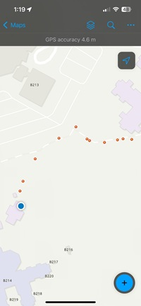
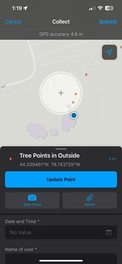
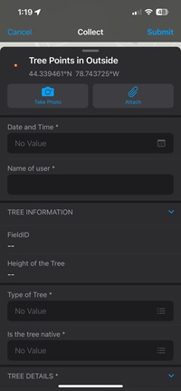
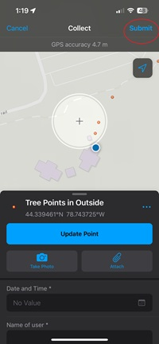
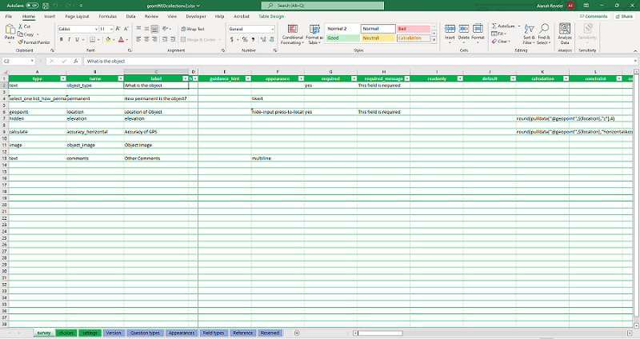
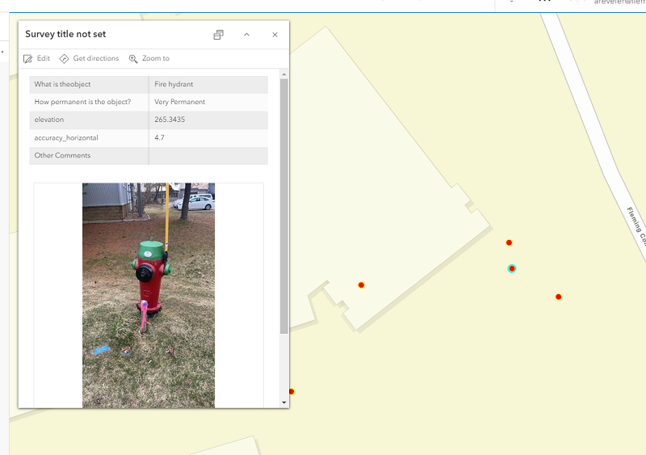

Collection
Field Maps
Overview
Field map is mobile ESRI product that allows user to do field data collection. It also has a function to view maps, share location, and create data points offline.
WorkFlow
(1)Log into ArcGIS Online and Click on Field Maps Builder. (2)Create the layers need for the data collection such as Tree point data. (3)Enabled Z-values to be collected in the settings. (4)Named the Map title and created the map. (5)Add different form elements to make the forum to be used for data collection. (6)Saved the forum and shared the map to the organization. (7)Downloaded the field maps application on cell phone. (8)Logged in and click on the recent created map called “Tree Points in Outside”. (9)Click the blue plus button and enter the information in form set up and click submit. (10)The point will appear on the map and you cam continue collecting points and submitting it to be saved. (11)Once the data collection is completed the map will save all the submitted points and will be available on ArcGIS Online. (12) The web map will have all the data collection which can be load onto ArcGIS Pro to used on a local scene or world scene. Also, it can be used on ArcGIS Online to create web scenes too.
 Figure 1. Starting page of the Field Maps Figure 2. Collecting points of trees around Fleming College
 Figure 3. Filling out form for data collection
 Figure 4. Submitting data collection of trees
Survey123
Overview
ArcGIS Survey123 is a form-centric data gathering solution. Survey123 is a tool that can used to collect 3D data to be shown scene if z-values of points are enabled.
Following the Tree Survey from Geom65, we made a simple generic survey123 that also collected z-values when the GPS point was collected.
The we went out to collect the data points. All points shown up on the map and are read to be looked at in a scene.
